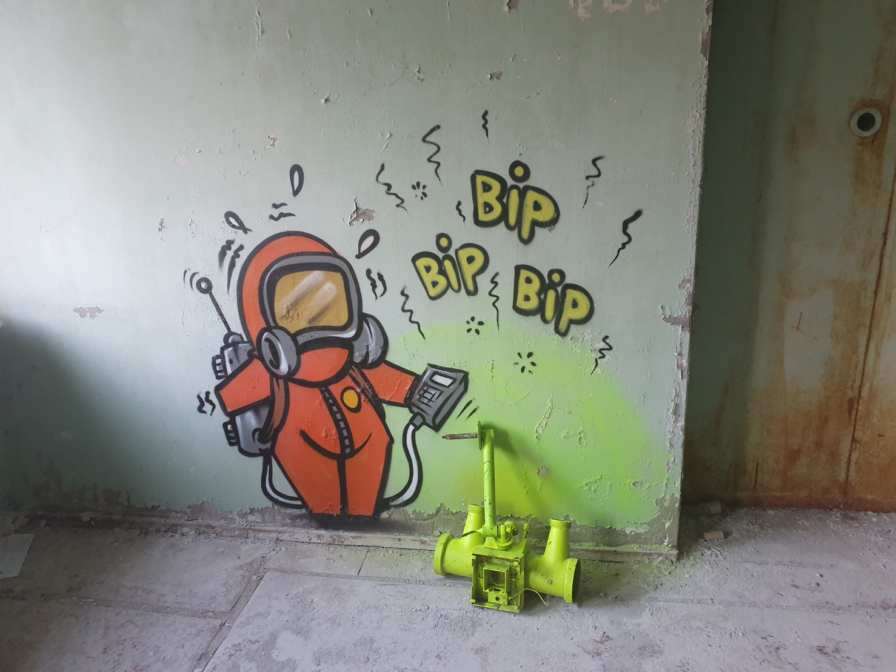
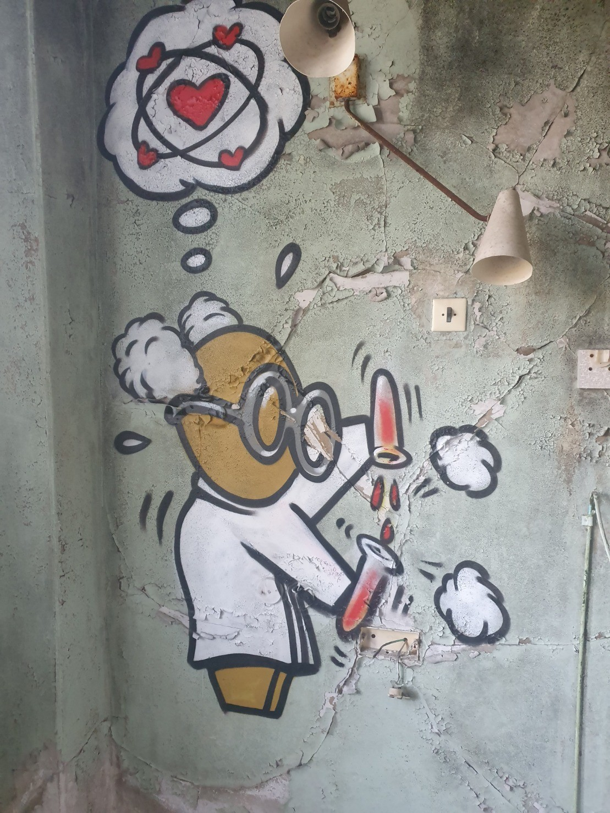
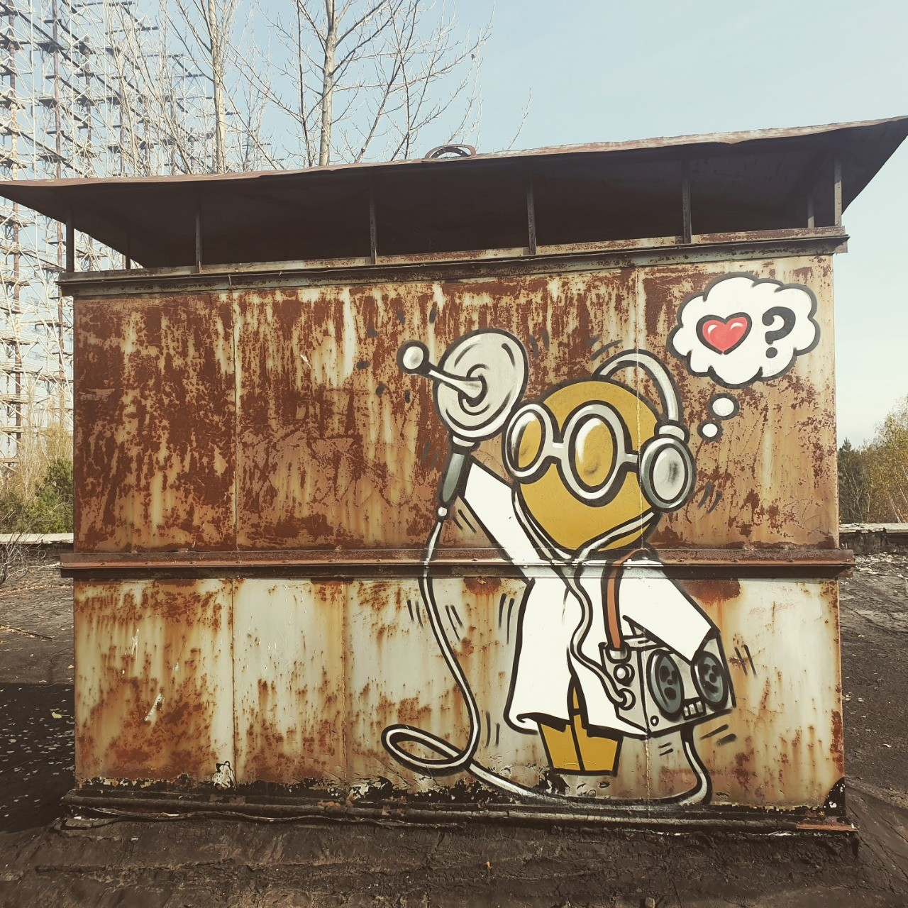

Chernobyl artwork.
Location: Chernobyl exclusion zone, Ukraine. Fall, 20192021/10/15 24:45:46
It's illegal to enter buildings in the zone as most of them are completely unstable, and due to a new zone administration there's typically no bribing your way out of a situation. Sometimes in the most unsuspecting places you may find street art left behind by a Stalker who risked arrest for something many will never see. Somewhat of a real life Easter egg, or a subtle nod to defiance:
"You're not suppose to be here."
  